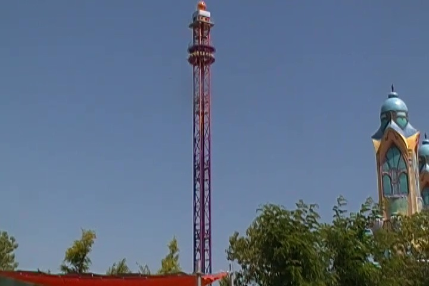
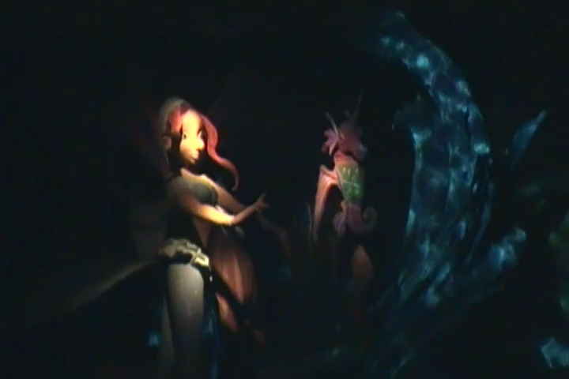

Rainbow Magicland is a small, but lively amusement park on the outskirts of the suburbs of Rome. And unlike most parks, which have been around for quite some time, Rainbow Magicland is actually a recent park, only opening back in 2011. So yeah. Incrediblecoasters has been around longer than Rainbow Magicland has. And unlike other parks that have opened up in the 21st Century *cough* Hard Rock Park *cough*, Rainbow Magicland seems to be a smashing success. Now, I visited the park in its 2nd year of operation, and while it wasn't packed the day I went, it certainly wasn't empty. There were some decent crowds in the park (but not enough for me to be annoyed). And I distincly remember seeing all sorts of advertising for this park plastered all over Rome. And while they haven't added a new attraction since they opened up in 2011, they had quite a nice selection of rides to begin with, including a tremendously underrated and fantastic roller coaster, Shock. Seriously, more coaster enthusiasts need to know about this ride. And it's just an overall nice park. The other coasters are fun, its got a nice selection of water rides, and dark rides. And everything has some really nice theming. The only flaw I noticed with the park was its lack of shade and not having enough water fountains, which in the hot Italian heat, can be a problem. Well, hopefully they'll add more shade and water fountains in the upcoming years. Cause I really liked everything else about the park. Definetly give it a visit if you're visiting Rome. Not only to support a new park, but it's also a really fun place to visit.
Here are the reviews of all the Flat Rides at Rainbow Magicland. And if there's one area where I don't think they really added a lot, it would be the flat ride section. Seriously, there were only a few at the park that I bothered to ride. And that would be their drop tower. And their drop tower is...ok. You get a really nice view of Italy from the top, and the drop is pretty powerful, as well as of a decent size. So what's the problem with this drop tower? The brakes. Good god. Never in my life has a drop tower come to such an abrupt stop! No seriously. I have had smoother and less abrupt stops when cliff jumping from heights of 70 ft (21 meters). It's tolerable and I still find it fun. But I still do believe that they really need to smooth out the landing. The other flat ride I bothered to ride was a Vekoma Mad House. These rides are incredibly rare in the U.S, so at first, its real exciting to see one here. But then you realize that they're all over Europe, and quickly lose their novelty, especially in Italy. The only other flat rides at the park would be a carousel, some teacups, and some bumper cars. Not bad, but I'm sure that they can add more flat rides in the future.

Fun ride. Just beware of the sudden stop.
Dark Rides
Rainbow Magicland has two dark rides for you to check out, and I rode both of them. The first of which is called Huntik. This is a shooting dark ride that you have to wear 3D glasses for, cause the whole thing is in 3D. And...I gotta be honest. I had no idea what was going on or what my objective was on this dark ride. Yes, they tell you what's going on during the ride as well as during the pre-shows, but I don't speak Italian and from trying to figure it out just by looking at the action...I got nowhere. I don't have a clue as to what this is. So I apologize to anyone who speaks Italian and is rolling their eyes at me. The other dark ride they have, Believix, is sort of a Peter Pan/Little Mermaid knock off. Now this one is also in Italian, but I pretty much got the gist of what this dark ride is about from the visuals. So if you like fairies and mermaids and flying, then this is definetly a dark ride to check out while at the park.

"Don't feel bad little seahorse. We mermaids speak a universal language."
Water Rides
I rode both of the park's water rides, and they were both really good. Ok, they're not ground-breaking. Neither of them are going to pop up on my Top 10 Water Rides List. But they are still very good water rides. Their shoot the chutes ride, Yucatan, is basically just your ordinary shoot the chutes ride. Except twice. Two lifthills and two drops. But all the Mayan theming that they put into this ride is really nice and definetly improves the experience. Plus, bonus drop. =) And then there's their rapids ride. This was good. Not amazing, but good. It had some fountains and some more Mayan theming, which looked really good. But it didn't get you that wet, which is not good on those hot Italian summers. What I did notice, was that this rapids ride essentially has no rules. I was working on Roaring Rapids, yelling at idiots from P2. So it was certainly intersting to see everyone standing up on this. But then again, its Europe. =)
Love the theming here.
Dining
The dining at Rainbow Magicland is pretty damn good I must say. All Italian Theme Parks do. It's just part of the culture here. God, I love Italian Food. I forget the name of the resteraunt where I ate lunch, but they had a very good spread. I was served a roll, chicken skewers, lasagna (YAY! ITALY!), and some sort of chocolate ding dong/twinkie dessert that was really good. Granted, this wasn't resteraunt quality or amazing, but for theme park standards (at least American park standards), it was incredibly good. It may have been just the norm in Italy, but I love Italy.
Yum Yum.
Theming and Other Attractions
Here are the reviews of all the other stuff at Rainbow Magicland. Now as for theming, I've already talked about how I really enjoyed the Mayan theming on the parks water rides. And there's some decent theming around the park. It's not world class or anything, but for a park like Rainbow Magicland, it's just right for the park. Oh, and I forgot to mention it's catchy as f*ck theme song to go with it. And as for other stuff to do in the park, I can't really think of much. I did hear from other people that apparently Rainbow Magicland has this racing show where they do these really crazy Never-in-America stunts. But I never saw it, so I can't judge for myself. And I can't really think of any other unique attractions at Rainbow Magicland. But it's a new park and I'm sure it'll grow and add more cool stuff in the future. They already have a good amount of stuff to do. =)
"RAINBOW RAINBOW MAGICLAND!!"
In Conclusion
Rainbow Magicland is a brand spanking new amusement park that has really started out with a bang. The park already contains some decent roller coasters including Shock, a Maure Sohne X Car that's one of the best of its kind, some well themed water rides, some interesting dark rides, and plenty to do. It opened up with not too much that it'd drown the park in debt, but also enough so that people who visit the park will find enough to do for a day and enjoy themselves. I'd really recommend visiting the park, not because it's a great little park, but also to support a new park so more will pop up. And apparently, that works in Italy as another park, Cinecittà World, got built right in Rome in 2014. Yay, so now I have another reason to return. And I am definetly looking foreword to doing so. =)
Enthusiast FAQs.
*Are there kiddy coaster restrictions? - Nope. You can ride the kiddy coasters here.
Tips
*Ride Shock multiple times.
*Drink lots of water.
*Take advantage of those Ice Streets. They do a good job of cooling you off.